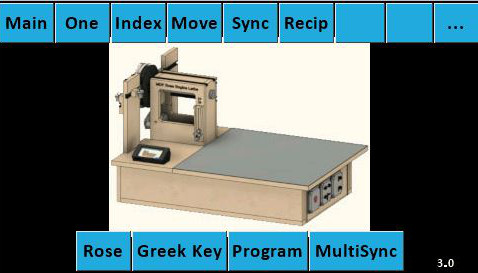

Code Version 3.0

|
|
Control System for Multiple Stepper Motors
Code Version 3.0 |
|
|

Touch one of the buttons on the screen image to get more details on what each does.
When you start the machine, the splash screen is shown as on the right. Touching one of the buttons on the top row will take you to that screen. This is a sophisticated program, so give it a few minutes to load. If you are new to using this machine, I recommend you start with the Main screen. You will have a lot to learn there before moving to other screens. The version you are using shows in the lower right corner of the opening screen. "v3.0" is shown here, denoting the use of version 3.0. The links below are intended to help the ornamental turner perform activities which are commonly performed on the MDF Rose Engine lathe. Special thanks to the Nerds of Woodworking for their help in compiling these. This list will be expanded as time permits for adding the documentation. | ||||||||||||||||||||||||||||||||||||||
As you use the controls for operating the MDF Rose Engine Lathe, the axes referenced follow the convention as shown below. Some have questioned this convention, in particular the Z axis being aligned the way that it is. But, whilst this may not seem to follow the Cartesian coordinates you learned in school, it actually does. This approach is based on the axes as envisioned from the object being turned, not the viewer. And, more importantly, this is an industry standard for lathe work. 
Lathe Axes
Stepper motor movements are managed:
Limit switches can be used for all screens except Index and Greek Key. More information about the implementation of limit switches is on the limit switches config page. Note: These pages are setup for split screen viewing to allow for keeping the program's screen image fixed whilst scrolling the textual information. Because of that, the pages don't work well on small screens like hand phones. | ||||||||||||||||||||||||||||||||||||||
|
Questions or comments? Contact us at
ColvinTools@Gmail.com |
Disclaimers |